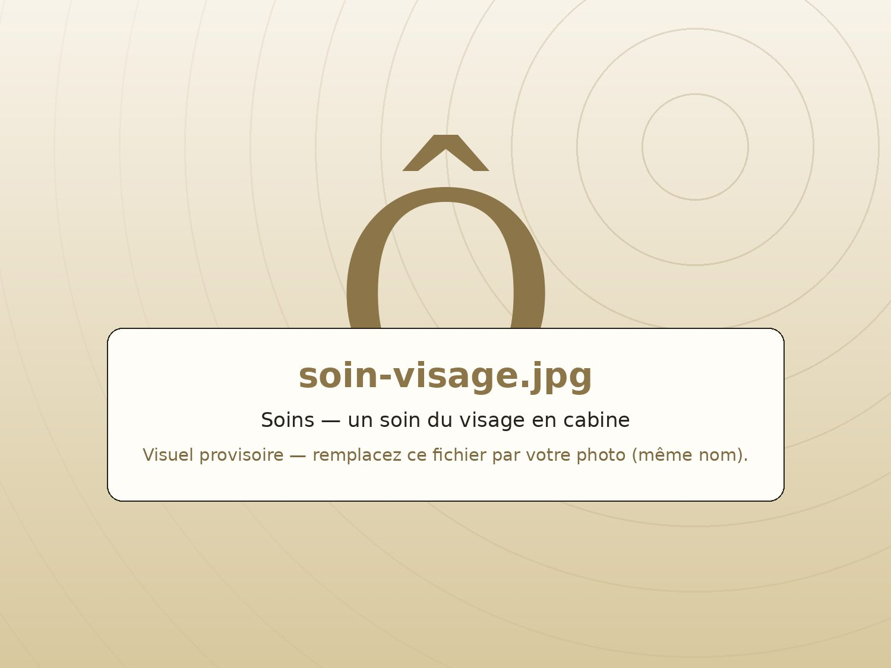
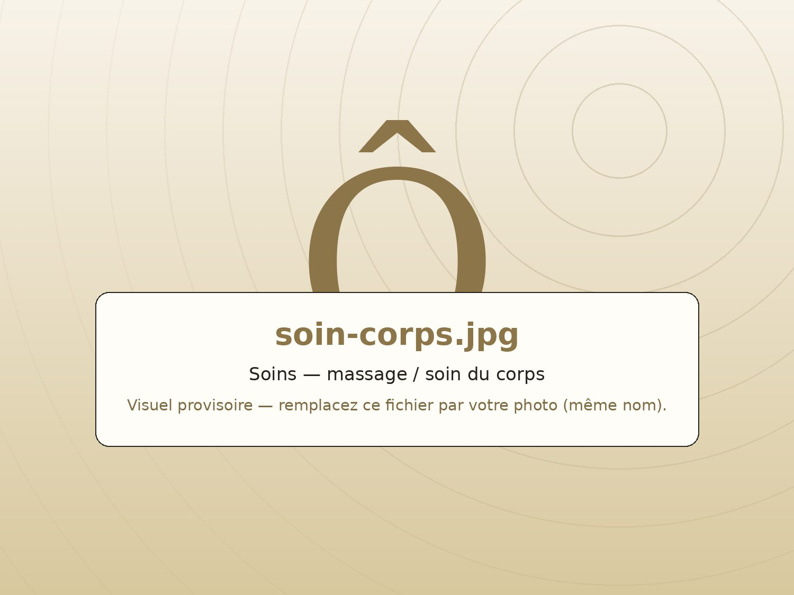
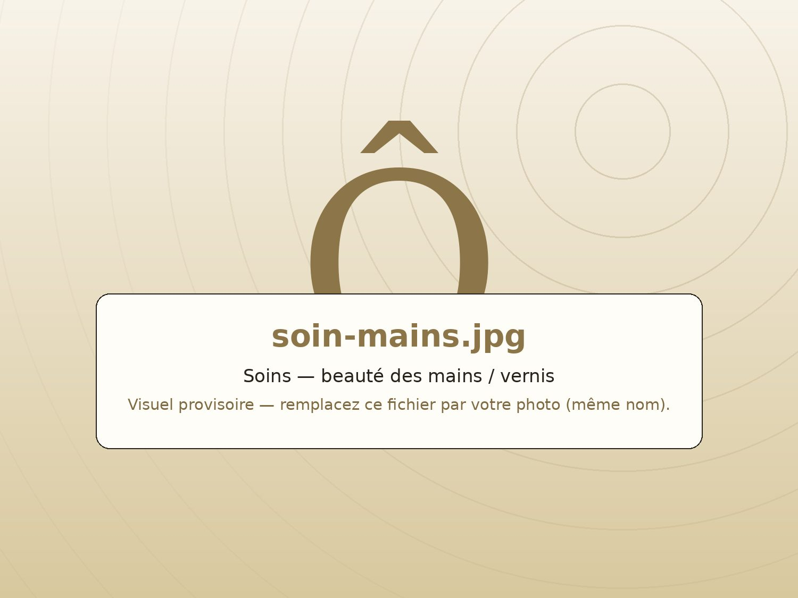

Les soins de l'institut
Des mains expertes,
des produits choisis.
Tous nos soins reposent sur des marques bio ou naturelles, sélectionnées avec exigence. La carte détaillée, les durées et les tarifs sont à jour en permanence sur la réservation en ligne — et bien sûr à l'institut.
Soins du visage
Votre peau, écoutée puis sublimée.
Chaque soin du visage commence par un temps d'observation et d'échange : votre peau du moment décide du protocole. Du coup d'éclat express au soin expert complet, les textures bio font le reste.
Estime & Sens — cosmétique bio française, certifiée, aux textures gourmandes. Les technologies visage viennent, si besoin, compléter le travail des mains.
- Des protocoles bio, du coup d'éclat au soin expert
- Technologies visage en complément des soins manuels
- Des soins pensés aussi pour la peau des hommes
- En escale : 30 min de jacuzzi avant votre soin visage

Soins du corps & massages
Le corps aussi a droit à son moment.
Modelages relaxants, gommages, soins ciblés du dos… Nos soins du corps sont composés sur mesure avec les produits Estime & Sens, et se marient à merveille avec un passage préalable au spa privatif : muscles chauffés, détente décuplée.
Le bon réflexe — associez votre massage à 30 minutes de jacuzzi ou à une heure de spa : voir les escales au spa.
- Modelages sur-mesure, du dos express au corps complet
- Gommages du corps, peau neuve garantie
- Cabine duo : le même moment, à deux

Épilations
La douceur d'abord, la tranquillité ensuite.
Du sourcil aux jambes complètes, nos épilations privilégient le confort de la peau : la méthode Epiloderm® ralentit la repousse et limite les poils incarnés, et la cire bio prend le relais sur certaines zones.
Epiloderm® — une technique d'épilation réputée pour sa douceur : repousse ralentie, moins de poils incarnés, moins de repousse dédoublée.
- Toutes zones : visage, maillot, jambes, aisselles…
- Méthode Epiloderm® et cire bio selon les zones
- Envie de durable ? Voir la lumière pulsée
Épilation longue durée
La lumière pulsée, pour une épilation durable.
Séance après séance, la lumière pulsée affaiblit le poil jusqu'à une peau durablement nette. Un protocole progressif, encadré par un échange préalable pour vérifier que votre peau et la période s'y prêtent.
Bon à savoir — les résultats se construisent sur plusieurs séances espacées ; on définit ensemble le programme adapté à vos zones.
- Une épilation progressive et durable
- Un échange préalable, des conseils avant/après séance
- Zones du visage et du corps, au choix
Le regard
Tout se joue dans le regard.
Sourcils restructurés, cils mis en valeur : quelques gestes précis suffisent à ouvrir, intensifier et illuminer un visage — sans maquillage, ou presque.
Sur mesure — la ligne de sourcil se dessine selon votre visage, jamais selon la mode du moment. La carte détaillée des prestations regard est disponible à l'institut et sur la réservation en ligne.
- Mise en forme et entretien des sourcils
- Mise en beauté des cils
- Le complément parfait d'un soin visage
Mains & pieds
Des ongles soignés, naturellement.
Beauté des mains et des pieds, pose de vernis classique ou semi-permanent : nous travaillons avec des marques respectueuses de l'ongle — et de la planète.
Manucurist & Couleur Caramel — dont le fameux Green Flash : le compromis idéal entre vernis classique et semi-permanent, pour une tenue d'une dizaine de jours qui se retire sans limage agressif.
- Soins et beauté des mains et des pieds
- Vernis classique, Green Flash ou semi-permanent
- Des formules plus douces pour l'ongle

Maquillage & bronzage
Bonne mine, sans compromis.
Mise en beauté d'un jour ou d'un grand jour avec un maquillage naturel et bio, et bronzage par brumisation pour un hâle uniforme — sans un seul rayon UV.
Riviera Tan — une brume autobronzante d'origine végétale à plus de 97 % (DHA issue de la canne à sucre, aloe vera, hamamélis) : le hâle se révèle en 6 heures environ et tient 8 à 10 jours sur le corps, jusqu'à 12 sur le visage.
- Maquillage bio Couleur Caramel, du naturel au sophistiqué
- Mise en beauté pour vos grandes occasions
- Bronzage uniforme, sans UV, en quelques minutes
Jeunes & ados
Les premiers soins, tout en douceur.
Découvrir l'institut, apprendre les bons gestes, s'offrir un vrai moment à soi : des rendez-vous sont pensés spécialement pour les plus jeunes, dans le respect de leur peau.
Le Soin Girly (8-15 ans) — un rituel découverte : gommage, léger modelage, masque et soin de jour, suivi d'un soin des mains au parfum de son choix et d'un maquillage léger.
- Des protocoles adaptés aux peaux jeunes
- Une jolie idée de cadeau d'anniversaire
- Moment mère-fille possible en cabine duo
Votre fidélité récompensée
Revenez, ça compte.
Une carte de fidélité récompense vos visites, et les bons cadeaux font voyager les moments de détente d'une personne à l'autre. Demandez-les à l'accueil de l'institut — ou au 06 86 80 18 20.